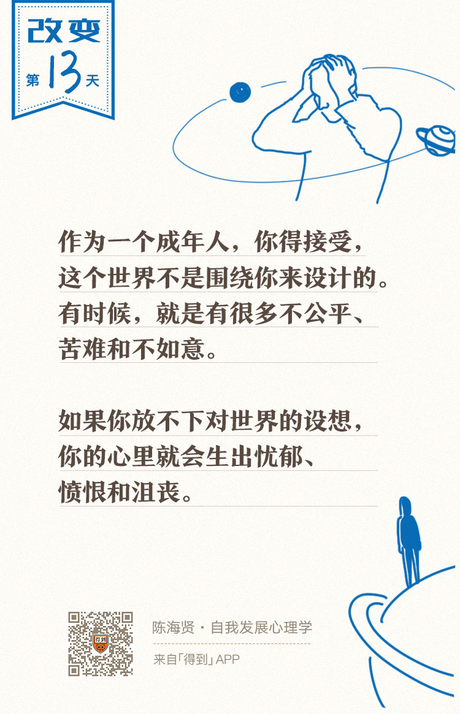

13丨对世界的应该思维：为什么我总看不清现实？

欢迎来到《自我发展心理学》。
你好，我是陈海贤。
我先来讲个故事。《荷马史诗》里讲到，英雄奥德修斯回家途中曾遇到一个妖怪，这个妖怪有一张床，每个过路的人，它都会抓到这张床上躺一躺。
如果这个过路人的身体比床短，它就把过路人拉到跟床一样长；如果比床长，它就把长的部分锯下来。
以前读这个故事的时候，我一直以为这个妖怪想杀人，现在我想，也许它只是想找个人结婚。只不过，它头脑中所设想的理想伴侣应该跟床一样长。
我们当然不会像那个妖怪一样蠢，可是你知道吗？我们的头脑里也经常会有类似的想法。比如：
- 小时候，我们觉得自己应该有更懂我们、更爱我们的父母；
- 读书的时候，我觉得自己应该去更好的学校，有更好的成绩；
- 工作了，我们应该进更好的公司，赚更多的钱；
- 为人父母了，我们就觉得子女应该更听我们的话
……
如果现实不按我们头脑中的这些假设来运行，我们也恨不得弄一张这样的床，把不符合我们想法的现实改造一番。
这就是我们今天想讲的第二种防御型思维——应该思维。
应该思维的本质，就是不去认识真实的世界，而是试图让真实的世界臣服于我们头脑中已有的规则，并在世界不符合我们头脑中的规则时，表现出怨恨、愤怒、焦虑或者沮丧。
我们可以把应该思维分为两种：
一种，是对世界和他人的应该思维；
另一种，是对我们自己的应该思维。
今天这节课，我们先讲对世界和他人的应该思维。
消极情绪背后的应该思维
不知道你有没有发现，几乎所有的消极情绪背后，都有应该思维的影子。

我前段时间见了一个妈妈，她总是嫌儿子拖拉不懂事，过来问我有什么办法能够让儿子听话。事实上，她的孩子并没有什么大问题，就是早上会赖床，晚上做作业有些拖拉之类的。
我问她：“你想要一个什么样的儿子呢？”
她说：“我觉得我的儿子就应该是那种聪明、听话、懂事、乖巧的。所以当我发现他现实中不是这样的，我就很生气，就像要把他矫正过来。可是我越这样，儿子越不听话，两人的关系越闹越僵，这让我很苦恼。”
这个妈妈的苦恼背后，就有孩子应该怎么样的应该思维。她越是放不下这种“应该”，就越处理不好现实。

我的另一个来访者，最近因为职场焦虑来咨询我。
他刚换了工作。新人嘛，公司的人对他都挺友善的。只有一个同事，对他爱理不理。
他有问题去请教那个同事，那个同事经常流露出一种“这你都不懂”的傲慢。可偏偏那个同事的工作做得不错，其他人都挺喜欢那个同事的。
我的来访者就对那个同事非常生气，下定决心要在业务上超过他。每次那个同事有什么表现，他都很在意。如果那个同事做得比他好，他就会非常焦虑和沮丧，甚至到了见到那个同事就紧张的地步。
这个故事里的来访者背后，也有很多的应该思维。
第一个“应该”，是他觉得所有的同事都应该对他好，或者抽象点说，他觉得所有的人都应该喜欢他。所以当那个同事表现出傲慢时，他就非常生气。
第二个“应该”，是他觉得既然同事不尊重我，我就应该超过他。只有超过他，我才能获得内心的平静。
就像很多励志故事的范本一样，好人凭借自己的不懈努力超过了坏人，得到了大家的一致认可。
当现实不符合这个故事范本时，他就非常焦虑。而且这两个“应该”是相互加强的。“他应该喜欢我，结果没有，所以我很受伤。因为我受了伤，所以我就要超过他。”
他把所有的自我价值都放到了和这个同事的比较上，一旦发现自己有不如这个同事的地方，他就会觉得自己很没用，并因此焦虑沮丧。
后来，当我跟他讨论这些时，他也意识到了情绪背后的这种思维。可是他说：“老师，你说的应该思维我理解了，可是我就不能想超过他吗？”
愿望和应该思维的区别
他提的这个问题非常重要，我也想在这里解释一下。
无论是想要儿子变乖，还是工作中想要超过同事，这些愿望本身并没有什么不合理。毕竟就像周星驰说的，“人如果没有梦想，和咸鱼又有什么区别。”
可是，应该思维和愿望有一个最根本的区别，就是能不能容忍现实跟我们的愿望不一致。
我们希望孩子乖巧听话懂事，这是我们的愿望，可孩子就有他这个年龄的孩子常有的拖拉，这就是事实。
我们都希望自己被人喜欢和尊重，这是我们的愿望。可是你也知道，有时候就是会有人不喜欢你，这就是事实。即使它让你不舒服，你也只能接受了。
事实是不会跟你讨价还价的，你也战胜不了事实。就算你想要改变事实，那也只能在承认事实的基础上想办法。
可是，有应该思维的人看不到这一点。他们好像是在跟事实赌气，觉得事实就不应该这样。
比如，那个妈妈对不听话的孩子这么生气的时候，她好像是在说：我必须要让孩子符合我的愿望。
当我问她：“如果这个阶段的孩子就是会拖拉怎么办呢？”
她低着头倔强地说：“肯定有办法让他改。”
这时候，她的愿望已经超越了现实。那个希望能够超过自己同事的来访者也是如此。
如果超过同事只是他的愿望，那这个愿望落空的时候，他就可以有其他选择了。也许他就会想：算了，反正平时接触也不多，眼不见为净。或者大不了干脆再换一个工作。
可是当他陷入一种应该思维的时候，他其实也在说：我必须要超过这个同事。这时候，他就看不到其他的可能性了。
“必须”和应该思维经常是相伴相生的。而“必须”意味着只能是这个结果。当结果不符合这个预期时，他就会陷入到严重的焦虑当中。
愿望和应该思维还有一个重要的区别，当我们想做一件事的时候，我们是愿望的主人，我们支配着我们的愿望。
可是当我们陷入应该思维的时候，应该思维好像变成了支配我们的主人，我们只能服从于应该思维背后的规则，这样我们就失去了我们的自主性。
我的一个心理咨询师朋友，在回答别人的问题时，经常说：“没什么大不了，反正又不会死。”
有一天，一个人问他：“那万一真死了怎么办？”
他说：“没什么大不了，反正人都会死。”
其实他想说的就是，不要轻易陷入这种应该思维当中。
所以后来，我就跟我的来访者讲了愿望和应该的区别。
我问他：“让同事喜欢你，或者超过你的同事，究竟是你的愿望，还是你必须要做的事情？”
他想了想说：“这应该还是愿望吧。”
我说好，那你就去想，为什么它们不是必须的，把你所能想到的所有理由都列出来。
他回去想了很多理由，比如他的价值不需要用这个同事来肯定，就算没超过同事，他也有自己的进步等等。
当他想这不是必须的时候，他就从应该思维中解脱出来了，他的焦虑也逐渐缓解了。
听到这里，也许你还是会有一些疑惑。你会问：无论在现实中，还是在电影里，很多人下决心的时候，都会说：“我一定要做到！”而事后确实也有很多人做到了，我们也会把他们当做励志的榜样。
如果说愿望是一个可以完成，也可以不完成的东西，而不是必须要做到的东西，那我们会不会太容忍自己偷懒了？
对于这个问题，我是这么想的。
首先，当一个人说“我一定要做到！”的时候，他其实并不是说一定能做到这件事，而是说他有投入和奉献的决心。这个决心不是关于外在世界的，而是关于他自己的。
他自己愿意投入和奉献多少，这当然是他自己能决定的，但是他决定不了这件事是否能做成。就算他有很大的愿望去做成这件事，也不能奢望现实来迁就他的愿望，否则就变成了应该思维。
第二，如果一个人把决心看做是一种愿望，而不是必须要完成的事，会让他变得更灵活。
有时候，越是认识到有些路走不通，你越会去找别的路。越是接受现实，你越能利用现实，去实现自己的愿望，而不是在焦虑、抑郁和愤怒中，跟现实怄气。
最后我想说，区分愿望和现实，是一个人成熟的标志，也是走出应该思维的关键。
作为一个成年人，你得接受，这个世界不是围绕着你来设计的，宇宙根本不理会你的喜怒哀乐，世界有时候就是有很多不公平，人生就是有很多苦难和不如意。
如果你一直放不下头脑中关于世界的设想，就像一个孩子不能放下对童话世界的执念，你的脑子里就一直会有很多“这个世界应该如此”的图景，而当现实不符合这个图景时，你的心里就会生出忧郁、愤恨和沮丧这些负面情绪。
而这些负面情绪最初来源于你对这个世界过于乐观的想象，现在又变成了你对世界悲观的理由。
你盯着现实与“应该”的裂痕，沉浸在对这个世界的失望当中，就没有办法多看一眼这个世界中美好的东西。这就是应该思维对自我发展的妨碍。
下节课我会继续讲，对自我的应该思维。
下一讲见。
